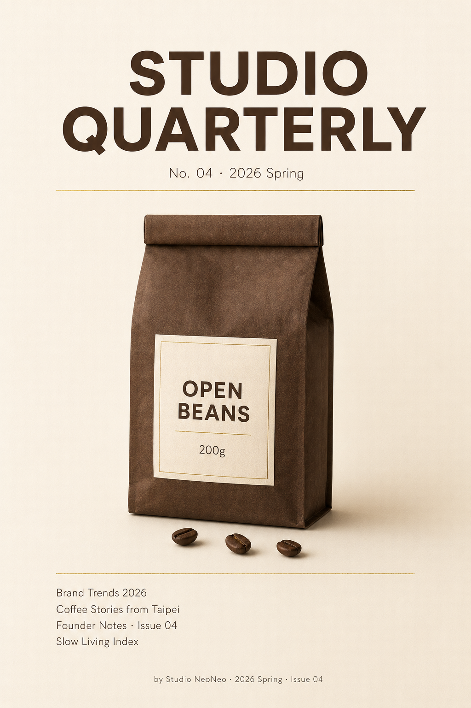

返回 CH6 模板速查站
(A4)
Editorial Cover 雜誌 / 報告封面
雜誌封面、品牌年度報告封面、電子書封面、訂閱電子報每月封面。直立 2:3 構圖、強標題＋小字目錄＋作者標、有「翻開來看的衝動」。文青品牌、自媒體創作者、企業內部刊物最高頻。
這張卡片你會學到
能判斷何時用 editorial cover（與 A3 海報、A2 KV 的差異）
能拆解 6 段並產出有「想翻開」感的封面
能識別 4 種踩雷（標題不夠 strong／副題太密／封底元素跑進來／作者名遮 anchor）
(01)
適用場景
這個模板用在哪
雜誌 / 報告 / 電子書封面。直立 2:3 構圖、上方 1/3 是大標題、中間 1/2 是中央焦點視覺、下方 1/6 是小字目錄與作者標。視覺要「讓人想翻開來看」。
典型客戶 / 交付物 自媒體 / 工作室 / 創作者、月度接案 NT$1,500-3,000、交付：雜誌或報告封面 2:3 直立 1 張
四個典型用途：
- 個人 Substack / Notion 每月電子報封面（創作者經營訂閱）
- 品牌年度報告 / 季度觀察封面（工作室自家出版品）
- Pinkoi / 嘖嘖募資封面（群募活動主圖）
- 獨立出版 / 自費電子書封面（Amazon KDP / Pubu 上架）
| 對比項 | 本卡片 · A4 Editorial Cover 雜誌 / 報告封面 | 近似模板 |
|---|---|---|
| 構圖 | 直立 2:3、上中下三段式 | A1：橫 21:9；A3：留白海報；A2：多比例延展 |
| 標題 | 必有大字標題 | A3：主張句；A2：訴求語 |
| 副題 / 目錄 | 常含、列出本期重點 | 其他模板：通常無 |
| 作者標 | 通常含（小字、底部） | 其他模板：無 |
| 中央焦點視覺 | 中央、占畫面 40-50% | A3：≤ 15%；A1：右側 60% |
| 使用場景 | 印刷 + 數位封面 | A1：純數位；A3：可印刷單張 |
一句話判斷：客戶問「我這份報告 / 雜誌 / 電子書封面怎麼做」走 A4；問「精神主張海報」走 A3；問「campaign 主圖」走 A2。A4 是自媒體創作者最常需要的卡片——每月電子報封面 NT$1500-3000 一張、可長期合作。
(02)
模板拆解｜6 段 prompt 結構
editorial cover 6 段。核心難度在「標題層級 + anchor 平衡」——標題太大蓋住 anchor、anchor 太大壓縮標題：
| 段 | 段落 | 必問還是可預設 | 填什麼 |
|---|---|---|---|
| 1 | 刊物定位 + 期數 | 必問 | 刊物名 + 第 N 期 / 月份；刊物個性（嚴肅 / 文青 / 商業 / 學術） |
| 2 | 主標題 | 必問 | 本期主題、≤ 8 字、英文優先；置上方 1/3 |
| 3 | 副題 / 目錄 | 可預設 | 本期 3-5 個副題 / 文章標題（細體、小字、列點） |
| 4 | 中央焦點視覺 | 必問 | 中央元素（產品 / 概念圖 / 抽象藝術）；占畫面 40-50% |
| 5 | 作者 / 出版資訊 | 可預設 | 底部小字：作者 / 工作室名 + 期數 + 日期 |
| 6 | 限制 | 固定寫死 | 禁忌：標題遮 anchor、副題列點 ＞ 5 個、字體超過 2 種、淘寶廣告風 |
記憶口訣：刊物 → 標題 → 副題 → anchor → 作者 → 禁。新手最常副題太密——列了 8-10 個本期文章，封面變目錄頁。要明確寫「副題 ≤ 5 點、各 ≤ 6 字」。
(03)
示範圖｜可複製、可重現
下面這張是「弄一下工作室年度品牌觀察報告 2026」封面。直立 2:3、上方大標、中央 anchor 視覺、下方副題列點 + 作者。讓人想立刻打開閱讀的視覺感。

完整 prompt · 工作室年度報告封面 STUDIO QUARTERLY
請生成一張雜誌 / 年度報告封面（editorial cover）： 【刊物定位】「STUDIO QUARTERLY」（個人工作室季刊、文青嚴肅、半商業半文化） 【尺寸與構圖】直立 2:3、A4 雜誌封面比例、上中下三段式排版。 【上方 1/3】 - 大字標題：「STUDIO QUARTERLY」（無襯線粗體、深棕、置中） - 期數：「No. 04 · 2026 Spring」（細體、淺棕、標題下方） 【中央 1/2 · anchor visual】OPEN BEANS 200g 咖啡豆袋（深棕牛皮紙、米白標籤、置中、占畫面 40%）+ 散落 3 顆咖啡豆於底部 【下方 1/6 · 副題列點】細體小字、左對齊： - Brand Trends 2026 - Coffee Stories from Taipei - Founder Notes · Issue 04 - Slow Living Index 【底部 · 作者標】極小字置中：「by Studio NeoNeo · 2026 Spring · Issue 04」 【背景】奶白漸變底（#F5F0E8 上 → #E8E0D0 下）、極淺絲絨紋理、無雜物。 【字體】2 種：標題用無襯線粗體、副題用無襯線細體。全英文。 【色板】嚴格 3 色：米白底 + 深棕主 + 燙金 accent（用於分隔線）。 【限制】嚴禁人物、嚴禁副題超過 5 點、嚴禁字體超過 2 種、嚴禁鮮艷色、嚴禁中文字、嚴禁標題遮 anchor、嚴禁封底元素（出版社 logo / 條碼 / 定價）跑進來。
讀圖時看這 4 個點：(1) 上中下三段式比例對不對（1/3 + 1/2 + 1/6）？(2) anchor 跟標題有沒有打架？(3) 副題列點是不是 ≤ 5 點？(4) 是不是有「想翻開」的衝動感？
(04)
改成你的場景｜踩雷與失敗案例
把 prompt 拿來、改 3 個替換槽就變你的版本：
| 替換槽 | 你的版本 |
|---|---|
| ⓐ 刊物名 + 期數 = ? | 例：STUDIO QUARTERLY No.04 / 弄一下季刊第 4 期 |
| ⓑ 副題列點 3-5 個 = ? | 例：本期 3 篇主文 + 1 個專欄 + 1 個投稿區 |
| ⓒ 中央焦點視覺 = ? | 例：產品（咖啡豆袋）／概念圖（一張地圖）／插畫（線稿人物） |
最常見的 4 種踩雷：
- 標題壓住 anchor 標題字級放太大、整個蓋住中央焦點視覺。解法：明確寫「標題佔畫面寬度 60%、垂直位置在上方 1/3 內」、避免「giant」「huge」這類字。
- 副題列點過多 客戶想塞 8 篇文章在封面、結果封面變目錄。解法：明確寫「副題 max 5 items, each ≤ 6 words」、超過的放裡面目錄頁。
- 封底元素誤入 AI 自動加條碼、ISBN、出版社 logo、定價標籤——這些是封底的活。解法：限制加「no barcode, no ISBN, no publisher logo, no price tag」。
- 中文標題別指望 prompt 解決 AI 生圖工具對中文字體只給新細明體系。A4 的最佳策略：英文版用 AI 直接生成（STUDIO QUARTERLY），中文版「弄一下季刊」「年度品牌觀察」用 後製字體疊圖工作流附錄 在 Figma 疊上「金萱粗體」級別字體。
實戰提醒：A4 editorial cover 客戶都是創作者 / 文青品牌 / 自媒體、他們對字體跟其他人都更挑剔。預設「英文佔位文字 + Figma 後製疊中文」是 A4 的標準工作流。
交付提醒 本卡片的 AI 生成的示範圖不是可直接給客戶的最終交付品。中文商業案一律先用 AI 生出構圖（含英文佔位文字）、再走 後製字體疊圖工作流 在 Figma／Canva 疊上中文、最後校稿確認才交付給客戶。
本卡片改寫自 ConardLi／garden-skills 之
editorial-cover.md 模板（MIT License、2026），已對中文進行台灣用語在地化、加入本地接案情境與失敗案例。